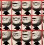
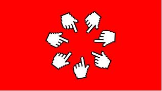
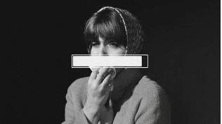

Popular
Latest
Newsletters
Sign In
Subscribe
Hachey Studios / Jennifer Kim
The Pointless Nikki Haley Campaign
Samantha Johnson
Oakley / Jessica Patel
The Power of Mindfulness
David Nguyen
Anki Web / Anthony Wong
America's Teenage Girls Are Not Okay
Rising teen anxiety is a national crisis
Christiane Amanpour
Trump's Last-Ditch Gamble to Avoid Indictment
Emily Jones
The Impact of Social Media on Mental Health: Is It Time to Unplug?
Jacob Smith
The Future of Work: How Automation and AI are Changing the Job Market
Sarah Chen

10 Tips for a Successful Job Interview
Michael Lee
Lion Heart / Rachel Garcia
Who Poisoned Pablo Neruda?
Toni García Márquez
Lighthouse / Grace Chen
Why Sleep Is Crucial for Your Health and How to Improve Your Sleep Quality
Ezra Klein

Funo Media / Ryan Thompson
The Impact of Social Media on Mental Health: Is It Time to Unplug?
Fareed Zakaria

Travesty / Olivia Brown
COVID-19 cases continue to rise globally, prompting renewed lockdowns
Anderson Cooper